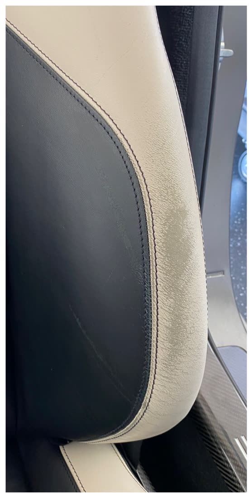
Vorher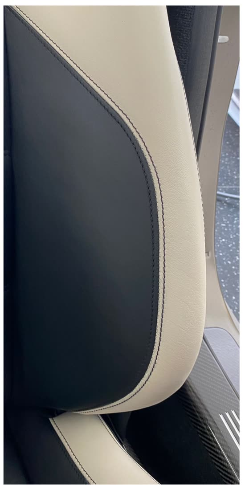
NachherSitzwange
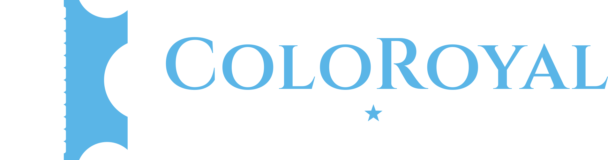
0176 80405247 Fotos per WhatsAppLeistungen / No. 04 · Cognac
Damit Ihre Innenausstattung wieder aufblüht!
Nach einigen Jahren kann Ihre Ledereinrichtung die Farbe verlieren: Die Oberfläche wird bleich und wirkt veraltet.
Wir frischen das Leder wieder auf und bringen die kraftvollen Farben Ihres Leders zurück!
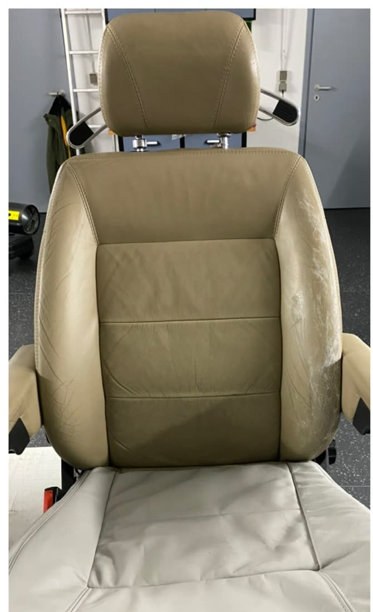
Vorher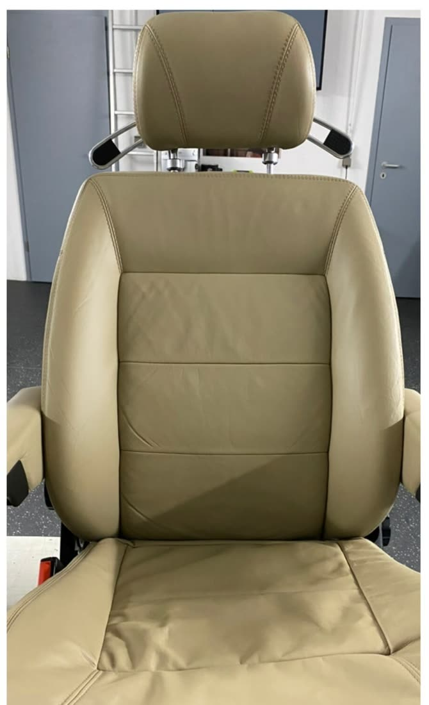
NachherBeiger SitzVorher / Nachher
Aus der Werkstatt

Vorher
NachherSitzwange
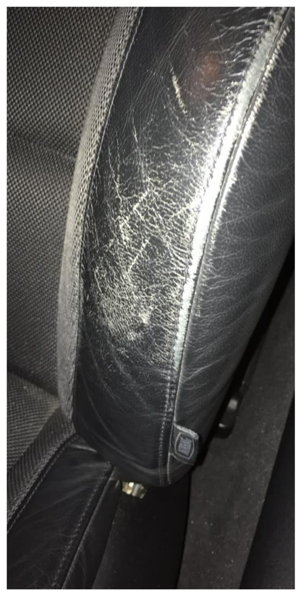
Vorher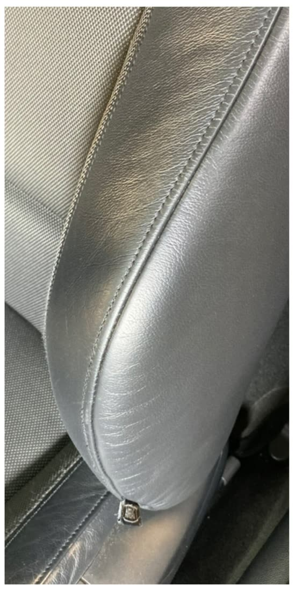
NachherSchwarzer Sitz
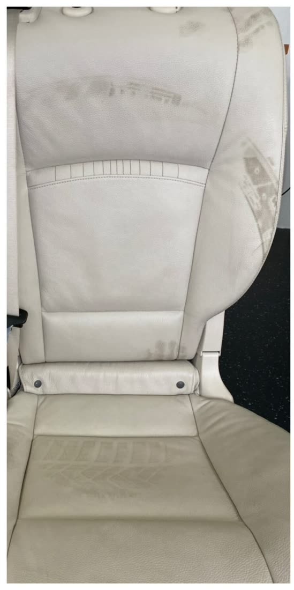
Vorher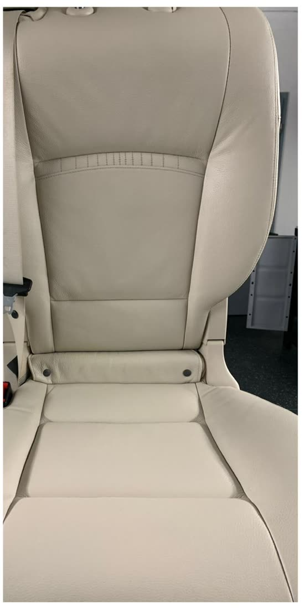
NachherWeißer Sitz
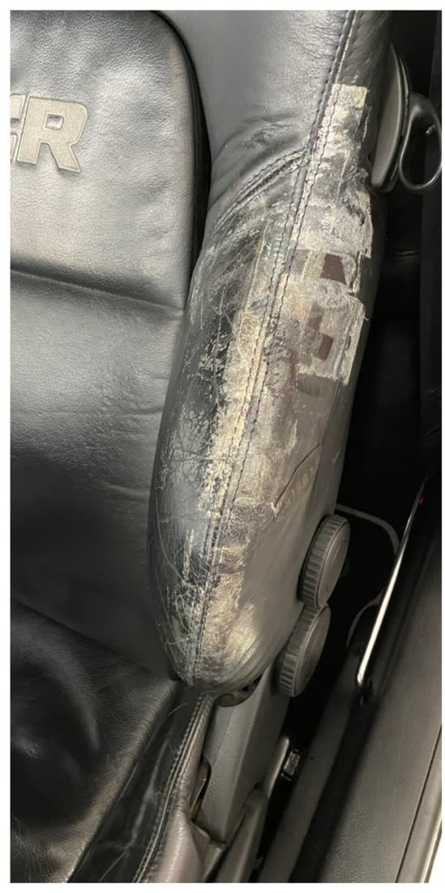
Vorher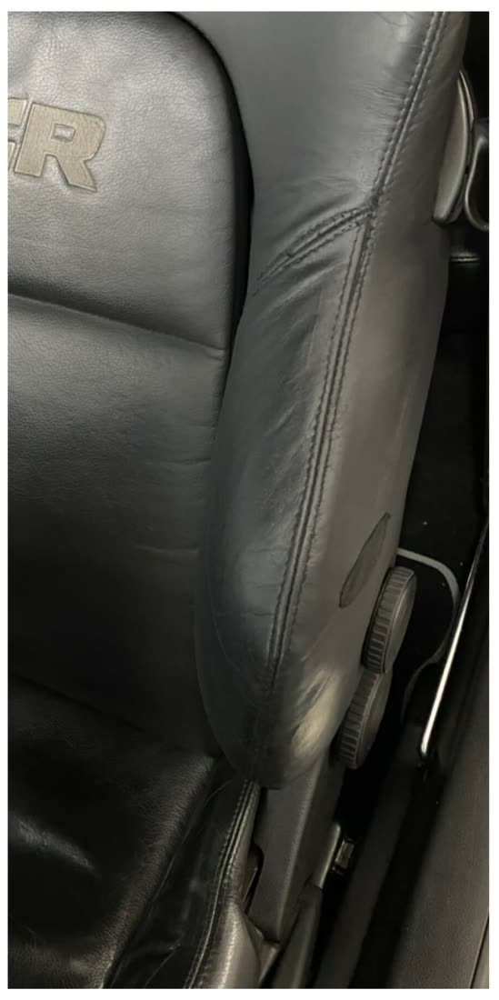
NachherSchwarzer Sportsitz
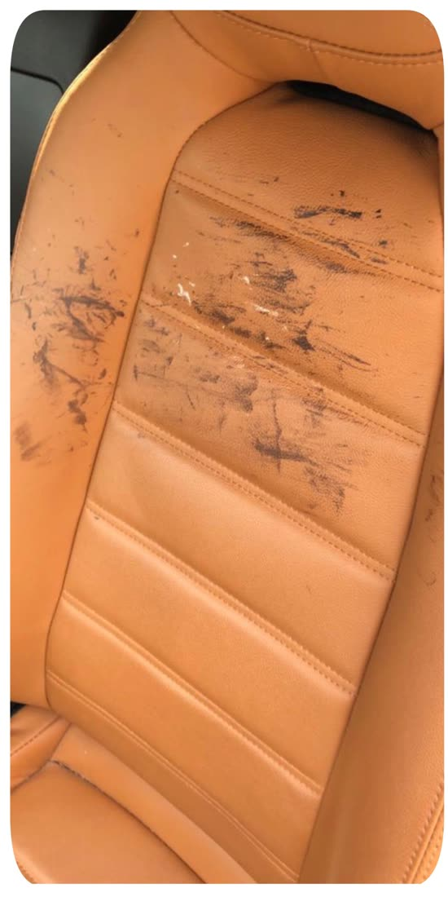
Vorher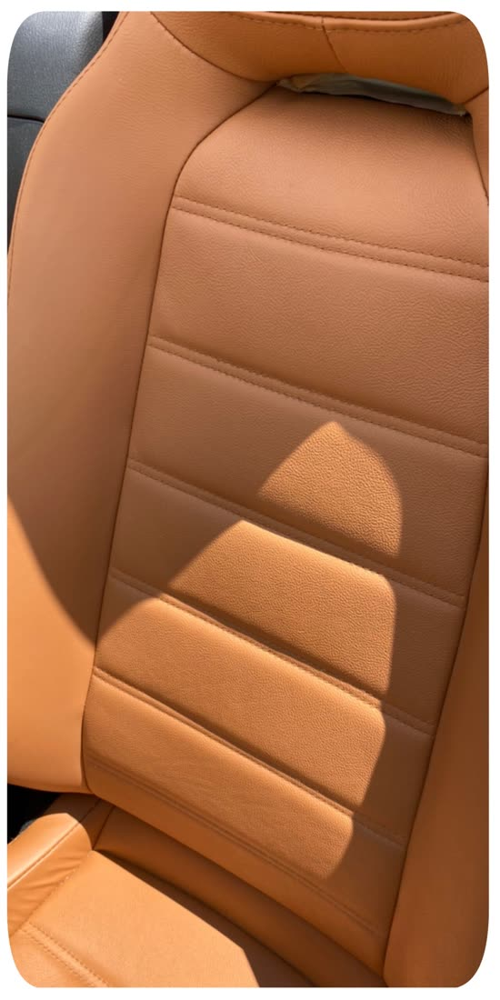
NachherCognac-Sitz
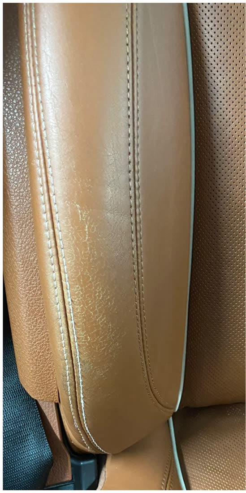
Vorher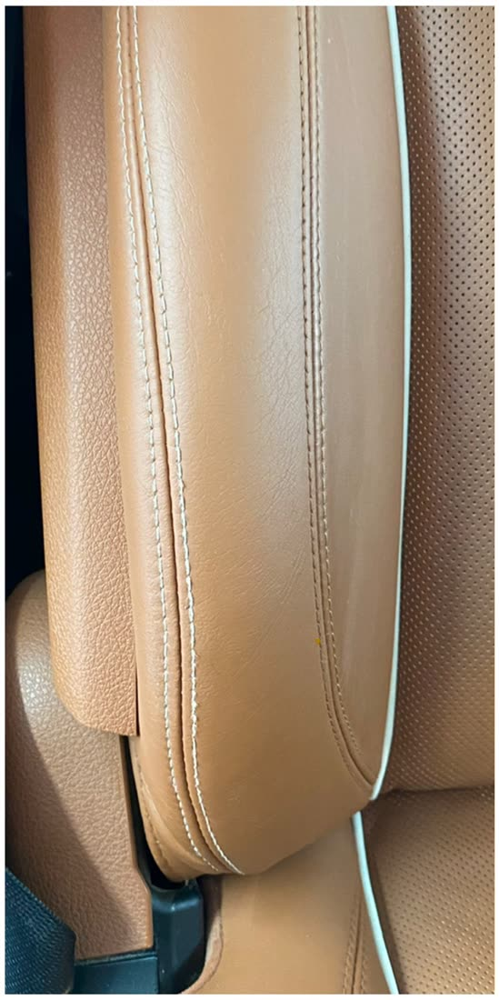
NachherBraune Sitzwange
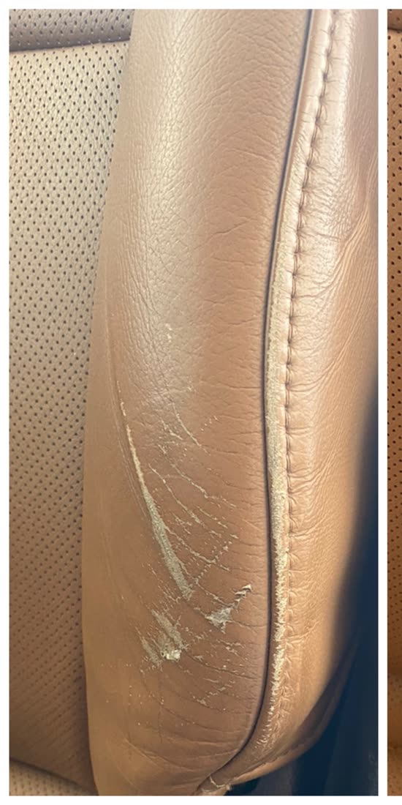
Vorher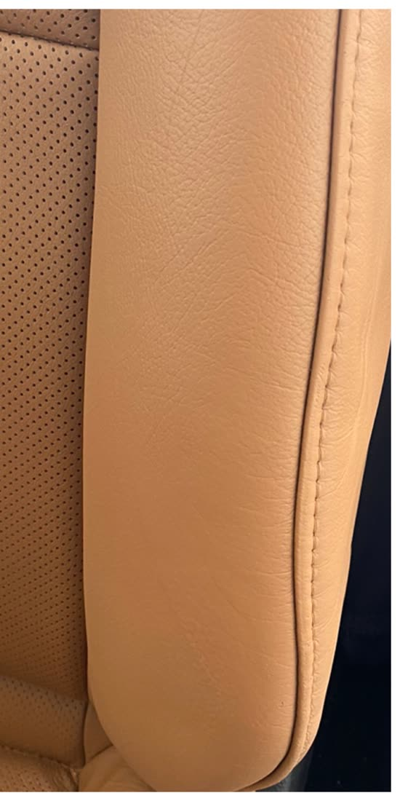
NachherSitzwange in Cognac
Weitere Leistungen